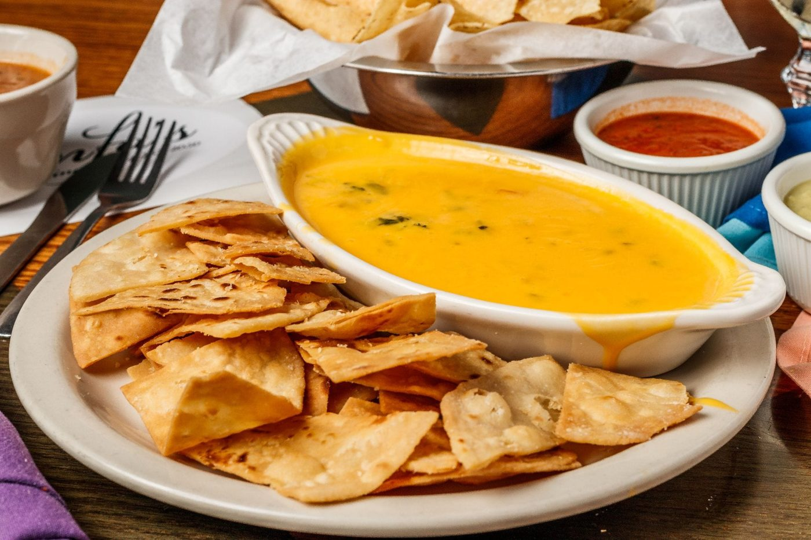
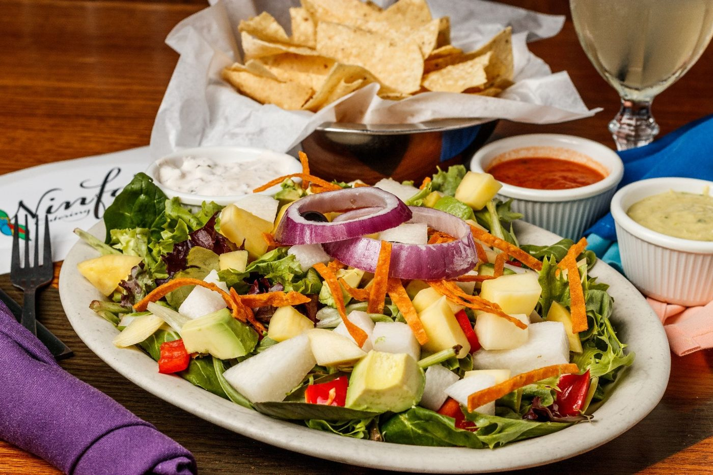
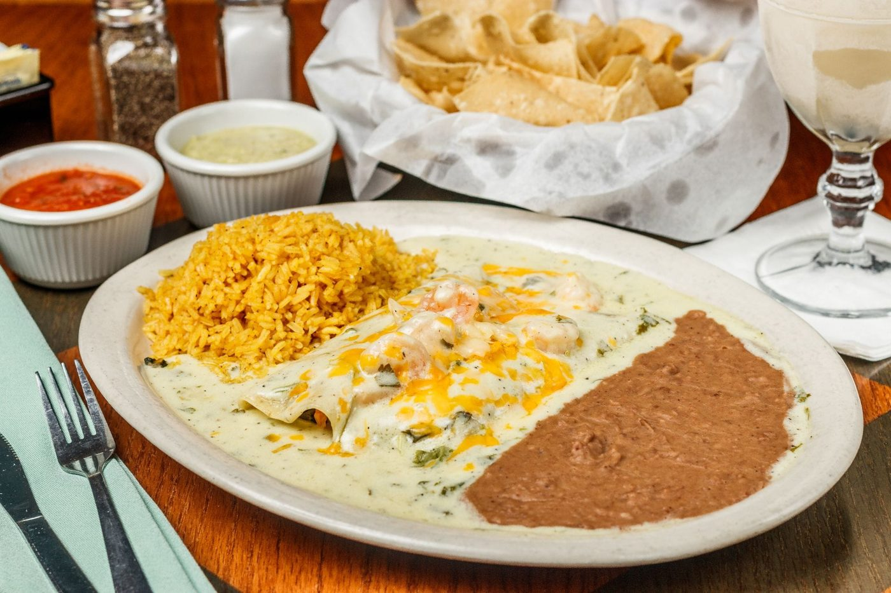
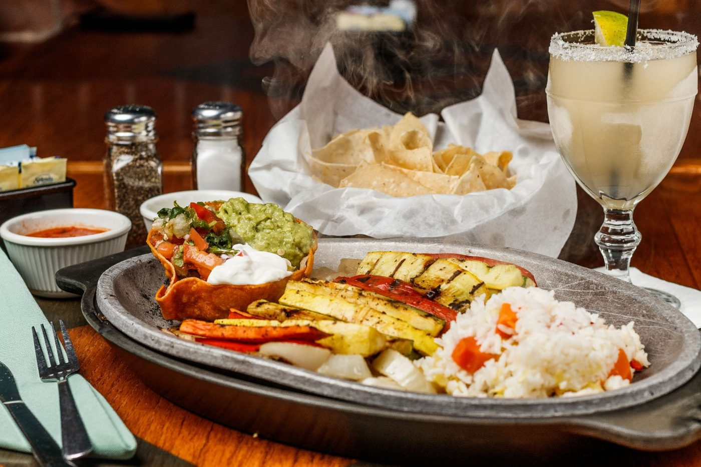
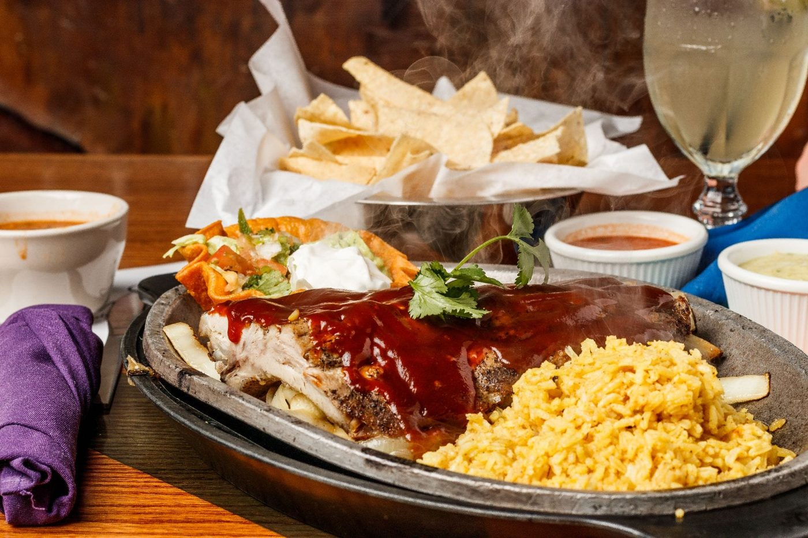
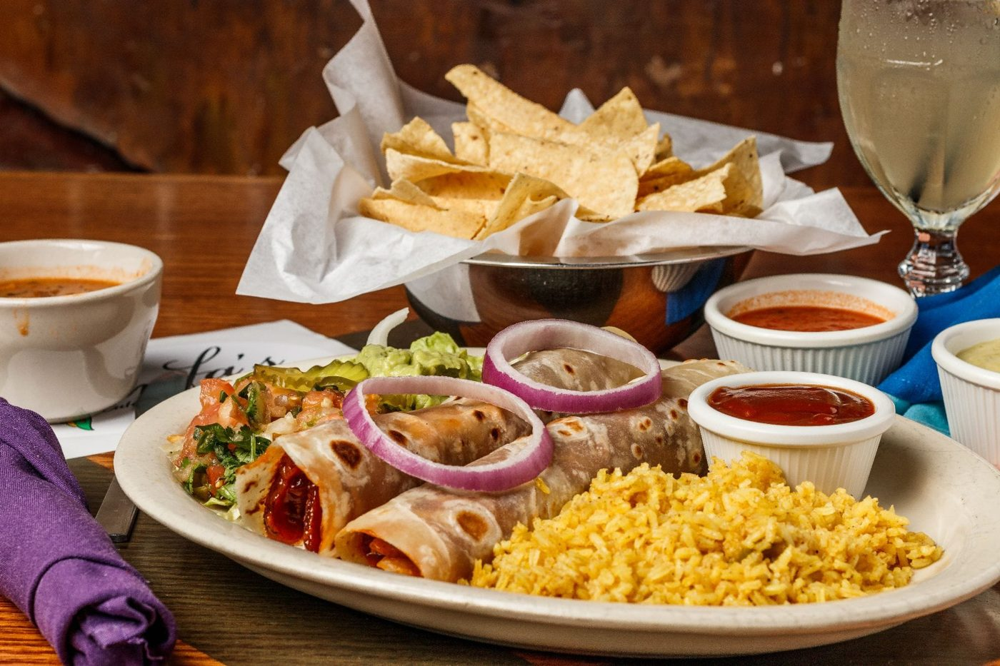

Every tortilla pressed by hand, every queso stirred low and slow. Prices and availability may vary by location — ask your server with any questions.

Our queso is rich, creamy, a little spicy — just the way Mama Ninfa liked it!
Our rich and creamy queso with bacon and our Atomica sauce. Finally, a queso for those who can take the heat.
Our handmade guacamole, served on top of a bed of lettuce with chopped tomato.
Jalapenos stuffed with large shrimp and jack cheese, fried golden brown.
Kick it up a notch with our pickled carrots, onion, jalapenos and red-hot peppers in a special seasoning blend.
Battered and fried jalapenos stuffed with cream cheese, served with ranch dressing.
Flame-roasted corn with olive oil and bell peppers, topped with spicy seasoning and queso fresco. Served with your choice of mayo or sour cream.
A Ninfa's specialty! Melted Monterey Jack cheese mixed with your choice of ingredients, served with pico de gallo on a bed of lettuce. Stuff it all into our handmade tortillas.
Refried beans, Monterey Jack and cheddar cheese, sour cream, guacamole, jalapenos and pico de gallo.
Topped with your choice of ground beef or ranchera chicken, refried beans, cheddar and jack cheese, sour cream, guacamole, jalapenos and pico de gallo.
Refried beans, cheddar and jack cheese, sour cream, guacamole, jalapenos and pico de gallo.
Topped with your choice of fajita beef, chicken, or pork. Refried beans, cheddar and jack cheese, sour cream, guacamole, jalapenos and pico de gallo.
Topped with baby shrimp tossed in our ranchera sauce, refried beans, cheddar and jack cheese, sour cream, guacamole, jalapenos and pico de gallo.

Chicken broth with chicken breast, served with rice, pico de gallo, tortilla straps and sliced avocado.
Mushrooms, jack cheese and vegetables, served with rice, pico de gallo, tortilla strips and sliced avocado.
Mexican-style pinto bean soup cooked with bacon, cilantro, fresh tomatoes, salsa ranchera and fresh lemon juice.
Your choice of ground beef or ranchera chicken on mixed greens, tomatoes, tortilla strips, shredded cheese and purple cabbage. Add fajita beef for $4.89.
Lightly fried corn masa topped with refried beans, mixed shredded cheese and queso fresco. Choice of fajita meat, carnitas, or shrimp, with lettuce, tomatoes, sliced avocado, purple onions and sour cream on the side.
A bowl of soup of your choice (Caldo Xóchitl, Tortilla, or Charra Beans) with mixed salad greens, tomato, tortilla strips, cheese, purple cabbage and sliced avocado.
Spring mix greens, jicama, avocado, red bell peppers, red onion and mango, served with raspberry vinaigrette or creamy lime cilantro dressing.
Ranchera shrimp and mixed lettuces topped with tomatoes, tortilla strips, cheese and purple cabbage.
A large fried flour tortilla topped with refried beans, cheddar cheese, lettuce, tomato, sliced avocado, sour cream and jalapeno, with your choice of beef, chicken, or pork fajita.

Pork carnitas or chicken fajita meat topped with Crema Suiza, Monterrey jack cheese, avocado slices and sour cream.
Beef, chicken, or pork fajita topped with enchilada sauce and homemade chile con carne with melted cheddar cheese.
Beef, chicken, or pork fajita topped with enchilada sauce and homemade chile con carne with melted cheddar cheese.
One cheddar cheese enchilada topped with enchilada sauce and one beef enchilada topped with brisket con carne.
Beef brisket topped with BBQ enchilada sauce and cheddar cheese, served with guacamole.
Spinach and shrimp, cream cheese, jack cheese, mushrooms and a touch of cayenne, topped with cilantro gravy.
Also available in classic styles: Antiguas (cheese), Crawfish, Spinach, Chicken & Spinach, Granjas (chicken), Principales (beef), and Del Mar (shrimp). Ask your server for today's enchilada choices.
Refried beans, chile con queso and enchilada sauce, served with Mexican rice and guacamole.
Spiced ground beef and refried beans topped with cheddar cheese and enchilada sauce, served with Mexican rice and guacamole.
Ranchera chicken and refried beans topped with jack cheese and enchilada sauce, served with Mexican rice and guacamole.
A large burrito topped with chili con queso and enchilada sauce, filled with refried beans and your choice of ground beef, ranchera chicken, or bean & cheese.

Grilled, handmade tortillas stuffed with melted cheese, served with sour cream, guacamole and pico de gallo.
Melted cheese and baby shrimp tossed in our ranchera sauce, served with sour cream, guacamole and pico de gallo.
Spinach and melted cheese, served with sour cream, guacamole and pico de gallo.
Your choice of fajita beef, chicken, or pork with melted cheese, served with sour cream, guacamole and pico de gallo.
Green bell peppers, onions and mushrooms with melted cheese, served with sour cream, guacamole and pico de gallo.
Smoked brisket and melted cheese with our signature ixtapa sauce, sour cream, guacamole and pico de gallo.
Bacon and poblano peppers with melted cheese, served with sour cream, guacamole and pico de gallo.

The gold standard of slow-cooked pork, braised for hours and flash-fried to order. Served with house-made tomatillo sauce, pico de gallo, guacamole, sour cream, rice and Charro beans.
Two handmade corn tortillas filled with our signature carnitas, served with avocado slices, pico de gallo and sour cream, rice and charra beans.
One handmade tortilla filled with your choice of beef, chicken, or pork tenderloin fajitas, guacamole, pico and chile con queso.
Two handmade tortillas filled with your choice of beef, chicken, or pork tenderloin fajitas, guacamole, pico and chile con queso.
Cheese chile relleno, chicken enchilada and a crispy beef taco, served with rice and refried beans.
Choice of a puff, tamale, flauta, or chile relleno, with your choice of beef or chicken fajitas, served with rice and refried beans.
Two cheese or beef picadillo stuffed poblano peppers topped with ranchera sauce and jack cheese, served with rice and charra beans.
A traditional Mexican dish — beef tips served in a rich spicy or mild gravy with a side of refried beans.
Fried pastry filled with your choice of ranchera chicken or ground beef, served with chile con queso, Mexican rice and refried beans.
Flame-grilled chicken breast topped with crispy bacon, fresh avocado, melted Monterey Jack, lettuce and tomato on a toasted sourdough bun. Served with golden fries.

A celebration platter with Mexican rice, charra beans, pico de gallo, sour cream and guacamole, with your choice of beef, chicken breast, or pork fajita meat.
A celebration platter with Mexican rice, charra beans, pico de gallo, sour cream and guacamole, with your choice of beef, chicken breast, or pork fajita meat.
A medley of fresh zucchini, squash, carrot, onion and bell pepper grilled fajita style, with white rice, guacamole, sour cream and pico de gallo.

Large chicken breast stuffed with jack cheese, cilantro, pico de gallo and your choice of ham, shrimp, or bacon, sauteed in a butter wine sauce over rice and topped with sauteed mushrooms.
Charbroiled chicken breast topped with jack cheese, sauteed mushrooms, onions and bell peppers. Served with Mexican rice, charro beans, guacamole, sour cream and pico de gallo.
Charbroiled chicken breast topped with jack cheese, poblano peppers and bacon. Served with Mexican rice, charro beans, guacamole, sour cream and pico de gallo.

Charbroiled boneless chicken breast with no sauce or butter, served with white rice and a small dinner salad with lite Italian dressing.
A medley of fresh zucchini, squash, carrot, onion and bell pepper grilled fajita style, with white rice, guacamole, sour cream and pico de gallo.

Shrimp stuffed with jack cheese and a sliver of jalapeno, wrapped in bacon and grilled. Served with guacamole, sour cream, pico de gallo, Mexican rice and charra beans.
Succulent jumbo shrimp grilled and sauteed in our garlic butter sauce. Served with guacamole, sour cream, pico de gallo, Mexican rice and charra beans.
Deep fried shrimp topped with ranchera sauce and jack cheese. Served with Mexican rice and charra beans.
Nine jumbo shrimp cooked three ways: Tampico (garlic butter), Acapulco (fried & topped with ranchera and jack cheese), and Cancun (butterflied, soaked in butter wine sauce). Served with sour cream, guacamole, pico de gallo, Mexican rice, refried beans and handmade tortillas.
Fried tilapia on handmade corn tortillas with lettuce, red cabbage, pico de gallo and chipotle ranch. Served with Mexican rice and charra beans.
Fried shrimp in handmade corn tortillas with lettuce, red cabbage, pico de gallo and chipotle ranch. Served with Mexican rice and charra beans.
Lump crab meat in handmade corn tortillas with our seafood cream sauce, jack and parmesan cheese. Served with rice and refried beans.

Ribs served with your choice of spicy or mild BBQ sauce, guacamole, sour cream, pico de gallo, Mexican rice and charro beans.

Beef, chicken, or pork fajitas with a crispy beef taco and a cheese enchilada.
Two chicken flautas topped with guacamole and sour cream on the side.
Cheddar cheese enchilada, pork tamale and a crispy beef taco.
Soft flour tacos with your choice of picadillo beef or ranchera chicken.
Two handmade flour tortillas filled with slow smoked brisket, served with rice, charro beans, BBQ sauce, guacamole and pico de gallo.
Cheese enchilada, a pork tamale, a cheese chile relleno and a crispy ground beef taco.
Crispy tacos with your choice of picadillo beef or ranchera chicken.
Cheese enchilada and a chicken flauta with a side of guacamole and sour cream.
Two cheese enchiladas and a crispy ground beef taco.
Two pork tamales topped with chile con carne and cheddar cheese.
Chicken flauta with guacamole and sour cream, a chile relleno, and your choice of a beef, chicken, or pork taco al carbon.
A cup of soup (tortilla, Xochitl, or charra beans) and a taco al carbon (beef, chicken, or pork), with rice, pico de gallo and tortilla strips.
Crispy ground beef taco and a handmade pork tamale, topped with brisket chili con carne and cheddar cheese.
One chili con queso puff and a chicken flauta with a side of guacamole and sour cream.
A crispy corn chalupa with refried beans, melted cheese, lettuce, tomatoes, guacamole and a purple onion ring, topped with your choice of chicken, beef, or pork fajita.
Two crispy ranchera chicken tacos and a chili con queso puff.
Two crispy ground beef tacos and a chili con queso puff.
One ground beef crispy taco and one cheddar cheese enchilada topped with enchilada sauce.
A bowl of soup (tortilla, Xochitl, or charra bean) with two crispy tacos (ground beef or ranchera chicken), rice, pico de gallo and tortilla strips.
A flame-grilled beef patty topped with melted sharp cheddar on a toasted sourdough bun, with lettuce, tomato and golden fries.
Southern-style chicken tenders, battered and fried golden brown, served with a side of crispy fries.
One grilled handmade flour tortilla stuffed with melty cheddar cheese.
A small flour tortilla stuffed with refried beans and cheese.
Handmade corn chips topped with refried beans and cheddar cheese.
One crispy ground beef taco with cheese.
One corn tortilla stuffed with melted cheddar cheese and topped with enchilada sauce.
A handmade tortilla wrapped around our fajita beef.
Deep fried battered chicken tenders with a side of fries.
A grilled ground beef patty on a toasted bun, served with a side of fries. Add cheddar cheese for the cheeseburger.

A glazed Mexican confection of velvety smooth custard, topped with whipped cream and caramel cajeta sauce.
Vanilla ice cream wrapped in corn flakes, sesame seeds and graham cracker crumbs, flash fried and topped with whipped cream, raisins, pecans and cajeta sauce.
Pastry stuffed with bananas, nuts and raisins, then fried. Served with vanilla ice cream and cajeta sauce.
Two pastries filled with apple pie filling, served with vanilla ice cream and a side of cajeta sauce.
Choose between plain, strawberry, chocolate, or cajeta and banana.
Sweet Mexican fritters covered in cinnamon and sugar, with your choice of cajeta, chocolate, or strawberry dipping sauce.
Ninfa's light and flaky pastry puffs, dusted with powdered sugar and cinnamon, served with honey.
Build your plate your way with a full line of a la carte sides, sauces, tortillas, chips & salsa, and party-size portions — plus our famous Margaritas To Go and Party Packs for groups of 3 or more. See the full build-your-own list when you order online, or ask your server in the restaurant.